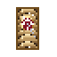
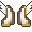
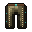
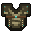
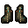

Stasis Hourglass
druhá ruka · ⏱ 120 s
Time stops for whoever holds it.
Right-click: turn into a golden statue for 2.5s. You can't be hurt, but you can't move or attack either.
Relikvie fungují jen ve svém slotu. Nosit můžeš jednu na slot: helma, hrudník, kalhoty, boty a druhá ruka.
Time stops for whoever holds it.
Right-click: turn into a golden statue for 2.5s. You can't be hurt, but you can't move or attack either.

Woven shell, needle-sharp answer.
Parry: raise the shield right before a hit (0.35s) - the hit is cancelled and you stitch through to the attacker's back for 8 damage. Shell: while blocking, 3 hits from ANY side are absorbed (regrows 20s after cracking).
Dva efekty, každý kus přidává k oběma. Duše: nabité údery plní Soul (max 99), drž Shift 1,5 s na místě a 33 Soul se změní na 3 srdce. Křídla: když bys umřel, vrátíš se s 50 % HP a 3 s ochrany; poloviční pád.

Light as a feather, stubborn as a saint.
Pale Seraph set: when you would die, come back with 50% HP and 3s of protection (every 10 min with the full set; fewer pieces = longer). Less fall damage.
Empty inside. It fills with every blow.
Pale Seraph set: charged hits fill your Soul (max 99). Hold Shift and stand still for 1.5s: 33 Soul becomes 3 hearts. Getting hit breaks the focus. Soul is lost on death.
Porcelain over the heart, feathers on the back.
Pale Seraph set: adds to both effects - the Soul Vessel (charged hits fill your Soul, Shift to heal) and the Angel's Wings (come back once when you'd die).
Every step is a little lighter.
Pale Seraph set: adds to both effects - the Soul Vessel (charged hits fill your Soul, Shift to heal) and the Angel's Wings (come back once when you'd die).
Vrací 2 + 25 % poškození zblízka (proti šípům polovinu) a útočník dostane Grievous Wounds – 3 s se nemůže léčit.

Every blow has a price.
Thorn set: reflects 2 + 25% of melee damage (half vs. arrows). Attackers get Grievous Wounds: no healing for 3s.

Heavy is the head.
Thorn set: reflects melee damage and gives attackers Grievous Wounds.

Brambles grow where you stand.
Thorn set: reflects melee damage and gives attackers Grievous Wounds.

Leave a trail of thorns.
Thorn set: reflects melee damage and gives attackers Grievous Wounds.
Nabitý úder do hráče dá navíc 3 + 5 % tvého max. HP a natrvalo ti zvedne max. HP (až o +10 srdcí, každý kus si pamatuje svůj díl). Jednou za 30 s na hráče, moby se nepočítají.
It beats louder with every fight.
Heartsteel set: a charged hit on a player deals 3 + 5% of your max HP and PERMANENTLY grows your max HP (+½ heart, up to +10 hearts). Once per player every 30s.
The heartbeat is loudest in your ears.
Heartsteel set: charged hits on players deal bonus damage and grow your max HP.
Steel that remembers every fight.
Heartsteel set: charged hits on players deal bonus damage and grow your max HP.
Every step a heartbeat.
Heartsteel set: charged hits on players deal bonus damage and grow your max HP.
40 % poškození, které dostaneš, se změní na šedé zdraví, které během ~3 s mizí. Dvojitý Shift ho setřese, takže o něj nepřijdeš (cooldown 20 s).

Hits sink in slowly. Then you shake them off.
Thick Hide set: 40% of the damage you take turns into grey health and is lost over ~3s (up to 50% of your max HP). Double-tap Shift: shrug the grey health off - you never lose it.

Thick skull, thicker skin.
Thick Hide set: part of the damage you take turns into grey health. Double-tap Shift to shrug it off.

Arrows get stuck halfway.
Thick Hide set: part of the damage you take turns into grey health. Double-tap Shift to shrug it off.

The ground feels it first.
Thick Hide set: part of the damage you take turns into grey health. Double-tap Shift to shrug it off.
Každý kus setu je vlastní legenda (vlastní rituál, jedna na server). Každý kus dává 1/4 efektu, všechny čtyři dohromady 5/4. Kusy různých setů jde kombinovat, ale celý set je jasně nejsilnější. Action bar ukazuje, kolik kusů máš (2/4, 4/4 ✦).